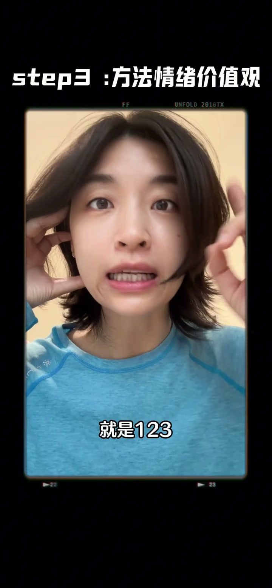

内容要点
这段视频围绕「素材倒着拼，日常Vlog流量居然翻倍了…」展开，按时间介绍其中的关键环节。Vlog只记录自己的生活 别人是不爱看的。
进阶设置与优化
Vlog只记录自己的生活 别人是不爱看的。我相信这个事实 你已经知道了。但如果我告诉你 现在保持你这些素材普遍。只去调整Vlog的结构 就能够迅速高效的让你的数据翻倍。你要来学吗。如果要的话 赶紧码住这一篇 仍然是非常具体的实操。我本科的专业是广播电视新闻。而我们今天要套的这个结构。恰恰就是新闻学里非常经典的道金字塔结构。为什么是道金字塔结构呢
核心内容
那你拍的Vlog呢 原本大概率是这样的。Hello 我是达宝。我最近一直在运动跟简直 带你们感受一下。跟你说了 我现在已经坚持了这样一周的时间。已经成功减重了两斤。那这样的讲法就很频频无期 很难引起观众的兴趣。而道金字塔的做法就是先给我最爽的结果。然后再去描述过程。OK 那接下来注意了。我们要手把手开始一步一步调整了
操作演示
非常热爱且喜欢的。除此之外我还找到了能够激发我简直热情的。一个很专业的一个提示证。结果没减掉一些。它都会让我更有成就感。包括一个刷肤的仪器。就是我真的非常非常喜欢。每次刷完都很好。第三步是去体验你的方法 情绪或者价值观。那我之前因为是完全不爱运动的

总结
非常热爱且喜欢的。